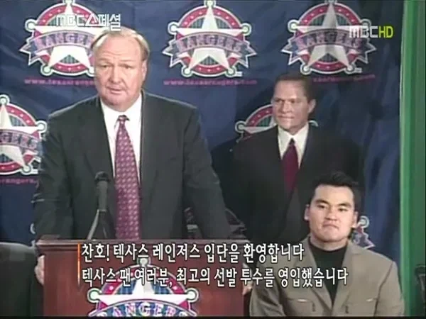

"짐머맨...! 그 투수...!"
"매닝...! 그 투수...!"
"긴지로...! 그 투수...!"
"벨라스케즈...! 그 투수...!"

"짐머맨...! 그 투수...!"
"매닝...! 그 투수...!"
"긴지로...! 그 투수...!"
"벨라스케즈...! 그 투수...!"
실제로 야구잡지에 역대 먹튀 TOP10에 있었음 ㅋㅋ
먹긴 했지만 튀지를 않았는데 어떻게 먹튀야
레인저스가 다시 한국인을 fa로 영입하는 날이 올까?
홍진호처럼 똑같은 걸 세 번 당하는 사람이 과연 있을까?
양현종 포함하면 이미 3번... ㅋㅋㅋ
양현종은 쌌어
뿌직
박양추 ㅋㅋㅋ
구드럼 씹년은 어디서 만나도 한번에 알아볼거 같다
PTSD ㅋㅋㅋ 추신수가 있었으면 그래도 나았을텐데 ㅠㅜ
저 저 텍사스매국노들이 ㅡㅡ
솔직히 저런 방송은 못믿겠음
그 투수...! 이건 뭔 밈임? 설명좀 해줄사람 있음?
텍사스에서 먹튀함 ㅋㅋ
박찬호가 메이저때 텍사스로 이적했는데
Mlb 역사에 손에 꼽을 정도의 먹튀라 평가 받을정도로 안좋았음
그래서 텍사스 출신 약쟁이 사이클리스트
랜스 암스트롱이(당시엔 약물 적발전이라 입김 좋았음)
오늘 찬호박 같은 기분이다 라는 말을 해서
잠깐 그 말이 유행이 될 정도로 텍사스 사람들의
기억에 좋지 않음 ㅋㅋㅋ
돈은 많이 받고, 부상으로 드르렁함
안좋은 의미로 기억하고있는거
대전사람이 상백...! 그 투수...! 하는거임
솔직히 지금 폼 보니까 짐머맨이 ㅋㅋㅋㅋ 와씨 어떻게 1승은 둘째 치고 방어율이 ㅋㅋㅋㅋ 심지어 불펜으로 나와도 털리고 진짜 ㅋㅋㅋㅋ 짐머맨은 무슨 짐짝맨이지
버러짐머맨 이라고도 하던대 ㅋㅋㅋㅋ
잊을 수 없는 그 이름
짐머맨 ㅋㅋㅋㅋㅋㅋㅋ 아오 너가 이해를 확시키네
난 박찬호 세대가 아니라서 잘 모르는데
국뽕 거르고 진지하게 텍사스에서 어느정도 입지였고 실력이었음?
LA다저스 시절엔 류현진이랑 비슷한 급이라고 보면 됨. 강팀 2선발. 약 팀 1선발.
그래서 FA터지고 텍사스에 고액으로 계약했는데 그 뒤에 그만....
너무 터프한 스타일로 투구하니까 부상이 없긴 힘들었는데 그게 하필 텍사스 가자마자 우르르 몰려터지고
그이후로 슬럼프가 ...
사실 그 미친 리그(본즈와 소사, 그 외 미친 약쟁이들이 현역이던)에서 6시즌 1.5선발 했으면 진짜 월클급 선수인건 맞지 ㅋㅋ. 그정도면 몸이 안 따라준것도 이해는 감.
ㄹㅇ.. 본즈랑 소사가 뛰던시절이니 뭐라 할말이없기는 함 그런 스터프로 던지게되면 근데 몸에 무리가 올수밖에없긴하지 ㅋㅋㅋㅋㅋ 스터프 돌았잖음.. 나 초딩때인데 방학시즌엔 삼촌이랑 맨날 새벽이고 아침이고 일어나서 다저스경기 보는게 루틴이었음 ㅋㅋㅋㅋㅋㅋㅋㅋㅋㅋㅋㅋㅋㅋ
그때 크보 중계 카메라들이 노답이라 더 비교되서 보이긴 했음.
같은 공이어도 크보는 카메라 위치가 노답이라(맨 뒤 전광판 때문에 사이드 낮은 외야에서 찍음) 스터프가 좋아도 중계에서는 존나 밋밋하게 보였는데.
믈브는 공이 미친듯이 휘니까 ㅋㅋㅋ 더 재미있었지.
맞지맞지 ㅋㅋㅋ 진짜 박찬호 존나멋있었는데...ㅠ
텍사스 시절은 암흑기
데려갈때까지는 다저스에서 좋은 선발투수였음.
다만 텍사스에서 5년보장 6500만달러 ( 21년도까지 안깨짐 ) 미친 거액으로 박찬호를 영입함
근데 01년후반부터 터진 부상이 줄줄이 터지면서 02년도엔 허리부상까지 와르르 몰려오며
투구폼도 변하고 그러면서 후반기에 좀 반등을 하나 했지만 이 이후 에이스급의 활약은 없었음
참고로 텍사스 가기전까지 박찬호는 5년동안 10승 이상을 했던 투수였음
그때 박찬호 연봉으로 크보 선수 전체 연봉 준다던 말이 있었는데..
텍사스 팬들에게는 미안하다~
먹튀 ㅋㅋㅋㅋㅋ